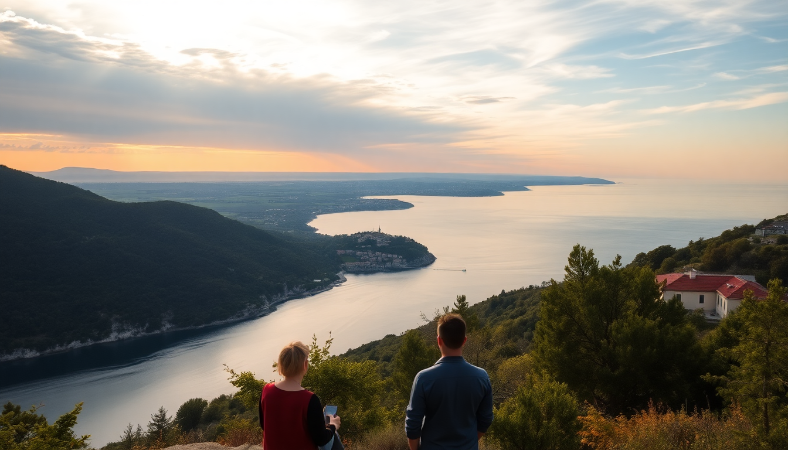

7-Day Croatia Itinerary: Zagreb, Plitvice & Istria

We spent a week driving a loop from Zagreb down to Plitvice Lakes, then across into Istria’s hill towns and coast. This itinerary skips Dubrovnik entirely — it’s too far for a short trip — and focuses on what you can realistically see without spending half your vacation behind a windshield. Here’s exactly how we did it, with real hotel names, restaurant stops, and the one place I’d skip next time.
Is one week enough for Zagreb, Plitvice, and Istria?
Yes, if you’re comfortable with a rental car and don’t mind moving hotels every two nights. We flew into Zagreb Airport, picked up a car from Sixt at the terminal, and drove straight to our first hotel. The total driving time across the week was about 10 hours — very manageable.
The trick is to stay inside Plitvice National Park for one night (saves you a 2-hour drive each way from Zagreb) and then base yourself in central Istria for the hill towns and Rovinj for the coast. Here’s the breakdown:
- Day 1-2: Zagreb (Upper Town, Dolac Market)
- Day 3: Drive to Plitvice (2 hours), stay at Hotel Jezero inside the park
- Day 4: Morning at Plitvice, drive to Istria (2.5 hours), stay in Motovun
- Day 5: Istria hill towns — Grožnjan, Bale, truffle lunch
- Day 6: Rovinj old town and Pula Arena
- Day 7: Drive back to Zagreb via Opatija for a coastal lunch
Where should we stay in Zagreb?
We booked Hotel Jägerhorn on Tkalčićeva Street — a small family-run place with creaky floors and excellent location. It’s a 5-minute walk from the funicular up to Gradec (the Upper Town). If you prefer something modern, Esplanade Zagreb Hotel is the historic grande dame near the train station, but it’s pricier and feels less local.
For food, skip the tourist-heavy Stari Fijaker on the main square. Instead, head to Mali Bar on Tkalčićeva for craft beer and a surprisingly good pork sandwich, or Vinodol for a proper strukli (baked cheese pastry) — their version is the best I’ve had outside a grandma’s kitchen.
- Upper Town (Gradec): St. Mark’s Church, Lotrščak Tower, Museum of Broken Relationships
- Lower Town: Dolac Market (open daily until 2pm), Ban Jelačić Square, Zrinjevac Park
- Neighborhood to walk: Tkalčićeva Street — café strip with locals, not souvenir shops
How do we visit Plitvice Lakes without the crowds?
Arrive at Entrance 1 before 8:00 AM. We did this in June and had the boardwalks nearly empty for the first hour. The park opens at 7:00 in summer, and the tour buses from Zagreb don’t arrive until 10:00. We booked tickets online through the official park site two weeks ahead — they sell out, especially for the morning slots.
We stayed at Hotel Jezero, the only hotel inside the park grounds. It’s basic — think 1970s Yugoslavian conference center — but the location is unbeatable. You can walk from the hotel to the Lower Lakes trailhead in 5 minutes. Dinner at the hotel restaurant was mediocre and overpriced; pack snacks or drive 15 minutes to Restaurant Lička Kuća in the village of Rakovica for grilled lamb and homemade kulen sausage.
- Route C (4-6 hours): Covers both Upper and Lower Lakes, includes the big waterfall
- Route H (2-3 hours): Just Lower Lakes and the boat ride — good if you’re short on time
- Parking: 7€ per day at Entrance 1, pay at the machine with coins or card
- Pro tip: Wear waterproof shoes. The boardwalks get slick, and your feet will get wet from spray near the waterfalls.
What’s worth doing in Istria besides Rovinj?
Rovinj gets all the Instagram love, but the real magic is inland. We based ourselves in Motovun at Hotel Kaštel — a converted 17th-century palace on the hilltop. The room had exposed stone walls, a view over the Mirna Valley, and the breakfast spread included local prosciutto and sir (sheep cheese) from the valley below.
Drive the road between Grožnjan and Bale — it’s a winding two-lane through olive groves and stone villages. Grožnjan is an artist colony with galleries tucked into every alley. Bale is smaller and quieter; we had lunch at Konoba Batelina, a family-run spot where the owner catches the fish himself. The pljukanci pasta with truffle cream was the best meal of the trip.
- Motovun: Walk the walls (free), visit the bell tower (small fee), truffle hunting tours
- Grožnjan: Jazz festivals in summer, pottery and painting studios
- Pula: Pula Arena (Roman amphitheater, less crowded than Rome’s Colosseum), Temple of Augustus
- Opatija: Austro-Hungarian seaside resort, Lungomare promenade, Hotel Kvarner for coffee
Is Rovinj overrated?
Parts of it are. The old town is beautiful — pastel houses, narrow cobblestone streets, boats bobbing in the harbor — but it’s packed from 11:00 to 16:00 with cruise ship day-trippers. We went at 7:30 AM for a swim off the rocks near Crveni Otok (Red Island) and had the water to ourselves. By noon, the main square was shoulder-to-shoulder.
Skip the restaurants on the harborfront. We ate at Konoba Fium on a side street — no English menu, handwritten daily specials, and a waiter who recommended the brodet (fish stew) that came with polenta. It was half the price of the places with harbor views.
- Best photo spot: Bell tower of St. Euphemia Church (climb it, 5€, views worth the stairs)
- Parking: Pay lots outside the old town — drive in circles at your own risk
- Beach tip: Mulina Beach (pebble, less crowded) or Skaraba Beach (rock slabs for sunbathing)
What’s the best way to get around Croatia on this route?
Rental car, no question. The train from Zagreb to Plitvice exists but drops you at the wrong entrance (Entrance 2) and runs only twice a day. Buses connect the major towns but won’t get you to the hilltop villages in Istria. We rented from Sixt at Zagreb Airport — booked in advance, about 40€ per day for a small automatic. The toll road from Zagreb to Karlovac (A1) costs about 5€.
Driving in Istria is easy: roads are well-marked, and traffic is light outside Rovinj. The only headache is parking in Motovun — the lot at the base of the hill fills by 10:00. We parked at Plodine supermarket in the valley and walked up (15 minutes, steep). For Rovinj, we used the Valdibora parking garage (3€ per hour, covered).
- eSIM: We used Airalo — 10€ for 5GB, worked everywhere including the park
- Tolls: Cash or card, no vignette system in Croatia
- Gas stations: Tifon and INA are everywhere, open 24/7 on highways
FAQ
Is the Croatia itinerary better as a road trip or with guided tours? Road trip gives you flexibility, especially in Istria where you’ll want to stop at random olive oil tastings and small villages. For Plitvice, a guided tour from Zagreb is fine if you don’t want to drive, but you’ll be on the park’s schedule (arriving at 10:00 with the crowds). We preferred having our own car to arrive early.
How much does a week in Croatia cost? We spent about 1,200€ per person including flights from London, car rental, mid-range hotels (80-120€ per night), and meals. The biggest surprise was parking — budget 10-20€ per day in coastal towns. Plitvice entry was 35€ per person in summer.
Can you swim in Plitvice Lakes? No. Swimming is strictly prohibited in the lakes — it’s a UNESCO rule to protect the fragile travertine barriers. You can swim in the nearby Korana River just outside the park (free access near the bridge in Rakovica). In Istria, we swam at Rovinj and Opatija beaches.
Conclusion
- Start in Zagreb for 2 days to get oriented — stay near Tkalčićeva Street for local vibes
- Stay inside Plitvice at Hotel Jezero to beat the crowds and see the lakes at sunrise
- Base in Motovun for Istria hill towns, then drive to Rovinj for a half-day
- Skip the harbor restaurants in Rovinj — walk two blocks inland for better food and prices
- Book everything ahead — Plitvice tickets, rental car, and hotels in Motovun sell out in summer